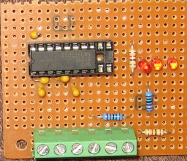
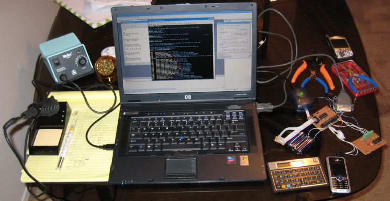

Intro | Build it! | Command reference | How it works | Download | Customize | Todo | User forum
Open GPS Tracker: modification and development
Level converter
The serial port on a PC uses high voltages (+/- 8 volts) with idle negative,
start bit positive, and data inverted. CMOS level serial communication among
the Tracker components is 0 - 3.3 volts, and inverted relative to a PC's serial
port. To customize and debug the Tracker, you need a serial level converter.
The chip is a MAX3232 (Mouser Part No. 511-ST3232EBN, 16-pin DIP, $3.15)

MAX3232 Datasheet PDF
Install a 16-pin socket on a perfboard and attach the five capacitors as shown
on the datasheet. The chip requires 3.3 volts in, and generates the high
voltages using a charge pump. One chip provides two transmitters and two
receivers, but you only need one each for most purposes. I installed screw
terminals on mine for easy connection, and LEDs on the outputs of the MAX3232
chip. If I built another one, I would have multiple ground terminals to make
it easier to connect everything.
Connect the RS232 side of the converter to your PC serial port. [give pinout]
USB serial adapters work fine. Connect power to the converter, go into
Hyperterminal or Minicom on the PC, and connect to the COM port directly. Use
4800 baud, 8, N, 1, no flow control. Type a few characters and nothing should
appear. Now bridge the CMOS IN and OUT lines on the converter, and type again.
Your characters should echo. If this works, the converter is good.
Connecting to the phone or GPS
If you connect the phone through the level converter, you can interact with the
AT command interface. When trying to send AT commands manually, this phone
suffers from character loss. At first I thought the AT interface is just broken
on the C168i, but it works fine if you send a continuous data stream. It has a
very short timeout before it stops listening, so you have to type fast and
continuously. This is probably excessive power management in the phone. The
Tracker frequently gets no response to its first ATE0, but the second attempt
works.
Connecting the GPS to the level converter will display the NMEA strings. I used
this to try out the GPS module. You can also use the level converter in reverse
to interface an RS232-level GPS unit to the AVR microcontroller. I tried this with
the Garmin ETrex Vista and the Tracker got a valid fix from it.
Enabling serial debug in the Tracker
Set the #define SERIAL_DEBUG in the Tracker source to enable debug output from
PORTA7 (MCU pin 6.) Connect this pin through the level converter to the PC
and start the microcontroller with debug firmware loaded. You should get a message
"MACHINE STARTED IN DEBUG MODE" at 4800 baud. From there, the microcontroller
will copy all phone interactions and responses to the PC. This is essential to
debugging the phone interaction.
You can also load the microcontroller with non-debug firmware and "tap" the phone
or GPS lines with the level converter. This will get you only one side of the
phone interaction, but debug firmware runs slower and might work when production
firmware does not.

Adding a command
To add a new command, add an entry to COMMAND_MATCH_PATTERN with the command
and address of a new function. Add the function to handle the command and parse
any options. This function will be called while the serial I/O is still running
and the command is in the buffer, so you cannot send a message directly from
this function.
Parse your options into the PARSE_FIELDS area. To send a message, set the address
of another function in COMMAND_PENDING. After the phone poll completes, your
function will be called from MAIN and you can send a message. The MULTI_SEND
functions send most messages.
Alternate uses for the program
The Tracker software can be modified to sense or control a variety of devices.
You can easily add commands to turn output lines on and off, read input lines,
measure voltages with the ADC, etc. If you need more I/O, the program could be
ported to the ATTINY86 or ATMEGA88 devices.
{kind=link}